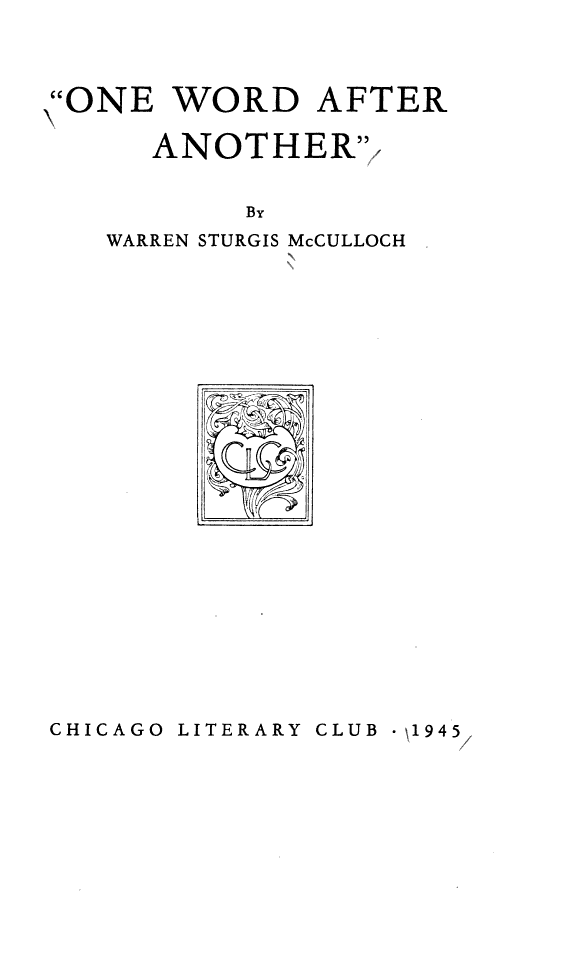

The debt to a dead poet
How do you praise a style without paraphrasing it away? How do you say what a poem does when the doing is the meaning? The tribute is an attempt to answer by attention rather than by summary.
Chicago Literary Club · Club Papers 48 · 1945
A tribute to Edwin Arlington Robinson, read before the Chicago Literary Club on 12 March 1945. Not a paper about neurons — a paper about the other machine McCulloch listened to all his life: the line of verse, where meaning arrives only in order.
Read the plateThe occasion
Edwin Arlington Robinson (1869–1935) was the poet of Tilbury Town: a fictional New England village of failures, dreamers, and people who keep their dignity while losing everything else. He won the Pulitzer Prize three times, wrote in plain diction and strict forms, and made ordinary lives sound like the inside of a courtroom.
Ten years after Robinson's death, McCulloch read a tribute before the Chicago Literary Club. The Club printed it as a slim paper: twenty-eight pages, an edition of 245 copies, number 48 in its Club Papers series. It is not a scientific article. It is an act of attention — one writer reading another closely enough to learn how the trick is done.
The thesis
The title says it literally. One word after another is how a line is made, how a sentence is parsed, how a poem arrives. Change the order and you have not changed the vocabulary; you have changed the meaning. Put the same words in a different sequence and the line can become nonsense, or a different poem, or a confession.
That is also the problem of the nervous system. A signal is a physical event; it becomes a proposition only in a net, in a sequence, in a context. McCulloch spent his life showing how order turns events into logic. Here, in 1945, he chose the older technology: metre, rhyme, and the line break.
Laboratory · the order machine
Robinson's lines are used here as the material. Drag the sequence from reversed to restored. The words never change; only their order does. Watch the sense score rise as the line becomes itself.
The score counts inversions: how many pairs of words are still in the wrong relative order. A line is a small network, and order is its wiring.
The craft
Robinson's sentences are almost bare. The pressure comes from what he withholds: the adjective that would explain, the judgement that would console. His people are seen from the pavement, at a distance, in a town that knows them too well. McCulloch's tribute honours a style that trusts the reader to hear the gap.
Whenever Richard Cory went down town, We people on the pavement looked at him: He was a gentleman from sole to crown, Clean favored, and imperially slim.
Miniver Cheevy, child of scorn, Grew lean while he assailed the seasons; He wept that he was ever born, And he had reasons.
She fears him, and will always ask What fated her to choose him; She meets in his engaging mask All reasons to refuse him;
And Richard Cory, one calm summer night, Went home and put a bullet through his head.
These are Robinson's poems, the subject of McCulloch's tribute, quoted from the public-domain texts. The tribute booklet itself is not quoted here; a full scan is linked below.
The four questions
How do you praise a style without paraphrasing it away? How do you say what a poem does when the doing is the meaning? The tribute is an attempt to answer by attention rather than by summary.
It turns admiration into a craft lesson: meaning is a relation between successive words, not a property of a word list. That lesson is as true of a logical proposition as of a line of verse.
A Club paper, 245 copies, read in 1945. It places the neurophysiologist among readers of poetry — and shows that his interest in sequence, form, and communication was not confined to the laboratory.
The booklet
The cover is austere: the title in quotation marks, the author's full name, the Club and the year. No portrait, no argument. The book is a talk that became an object — the Club's usual way of keeping a member's words.
| Author | Warren Sturgis McCulloch |
|---|---|
| Title | “One Word After Another” |
| Occasion | A tribute to Edwin A. Robinson, read before the Club on 12 March 1945 |
| Publisher | Chicago Literary Club · Club Papers 48 |
| Extent | 28, [4] pages · 22 cm |
| Edition | 245 copies printed for members |
| Rights | Public domain (HathiTrust: full view) |

Why it matters
It is easy to remember McCulloch as the man who turned neurons into propositions. It is harder to remember that he thought propositions were made of words, and words of order, and order of time. This little paper is the missing hinge: the same mind that had already helped to build the logic of nervous nets, and would later write about forgetting and memory, is here practising the older discipline of the line.
Read it next to The Natural Fit, where the practice becomes a book of poems, and next to The Past of a Delusion, where the same suspicion of words is turned on a theory that would not let itself be refuted.